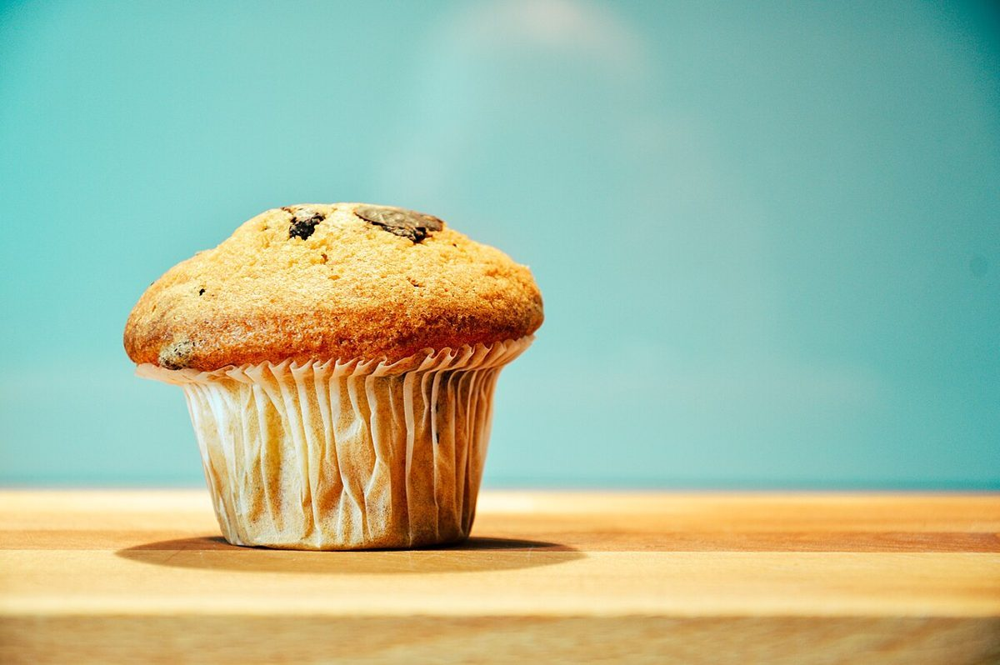

制作側の連想
ぐるぐる回る、全員賞の駆けっこ
店名の由来は分かりません。制作側は「ドードー」という響きから、ある物語に出てくる、円を描いて走る駆けっこを連想しました。みんなが好きな場所から走り出し、好きな場所で止まって、最後は全員に賞品が出る、というおかしな遊びです。そこでこのサイトは、5ページを楕円のコースの5つの地点に見立てて作っています。制作側の連想で、お店の理念・由来とは無関係です。
コースの案内
ここから走り出す、4つの地点
スタートは、いま開いているこのページです。写真は鹿児島市やお店の写真ではなく、国外・撮影地不明のフリー素材です。
- 2店のこと確認できていることと、制作側の想像を分けて書いています。

撮影地不明のイメージ - 3メニューメニューと価格は準備中です。

撮影地不明のイメージ - 4口コミ創作のイメージ例を三つ置いています。

撮影地不明のイメージ - 5アクセス所在地と地図を載せています。

撮影地不明のイメージ
ご案内
お店のこと(確認できたものだけ)
| 所在地 | 〒892-0864 鹿児島県鹿児島市加治屋町３−１２ |
|---|---|
| 電話 | なし |
| 営業時間 | 準備中 |
| 定休日 | 準備中 |
| ご予約 | 準備中 |
| 駐車場 | 準備中 |
| SNS | Instagram @dodo_pannomise |
第1地点のごほうび札
のぞいた賞
ここで止まっても、ぐるりと回っても、みんなに賞品が出る駆けっこ、という遊びです。制作側の連想で、お店のサービスではありません。